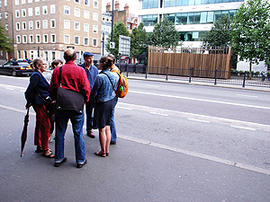

On 31 July we went on our approximately-annual walk around a neighbourhood in London. Last time (21 October 2011) it was Fitzrovia. We thought that we should now explore the patch to the west: Marylebone Village.  Turning our backs on Madame Tussauds we looked across Marylebone Road to Dan Monck’s choice: the air quality monitoring station – a structure you only see if you know it’s there (Sarah Wigglesworth Architects, 2011). We walked on to Grotto Passage, just off Paddington Street, where Robert Bradbrook told the story of the shell-encrusted grotto there in the eighteenth century and the present ‘Ragged and Industrial Schools’ building (1860) that replaced it. We then stopped for drinks at the King’s Head, Westmoreland Street, before looking across the road at the Heart Hospital (picked by Peter Brawne and Robin Kinross): a jewel in the crown of the NHS. Then to Marylebone Lane, whose bends, Aileen Harvey explained, followed the course of the river underground – the Tyburn – whose rushing sounds we were able to hear under manholes. One branch of this river enters the Thames at Pimlico, which suggests where we will walk next year. We finished the evening with a fish supper in the Golden Hind on Marylebone Lane.